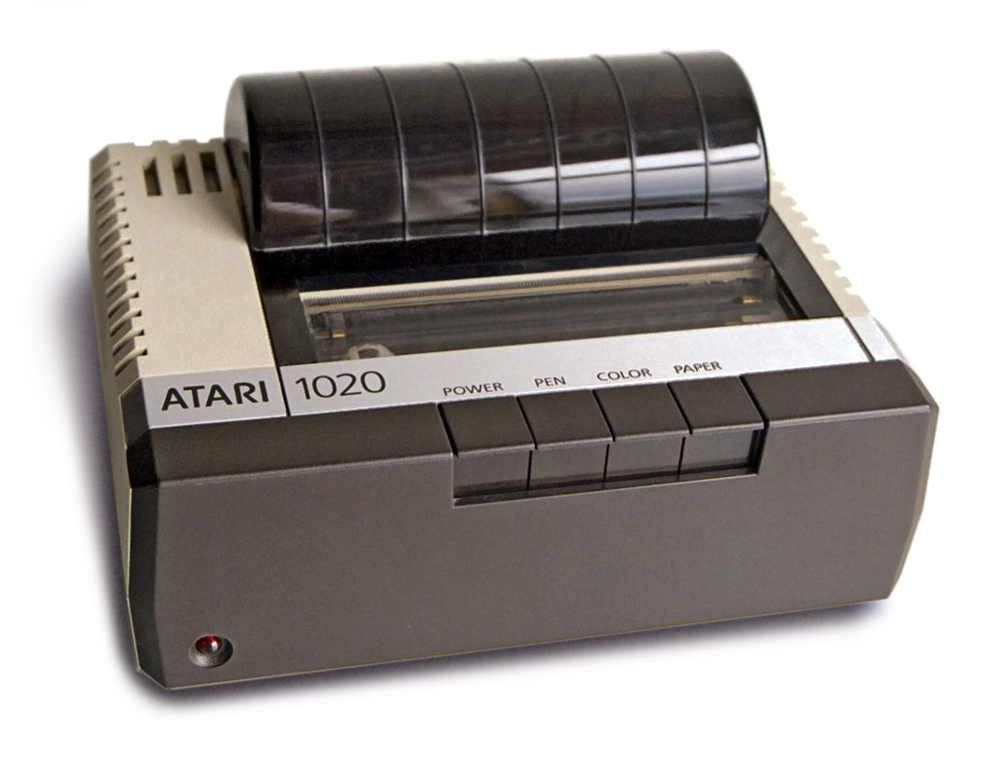
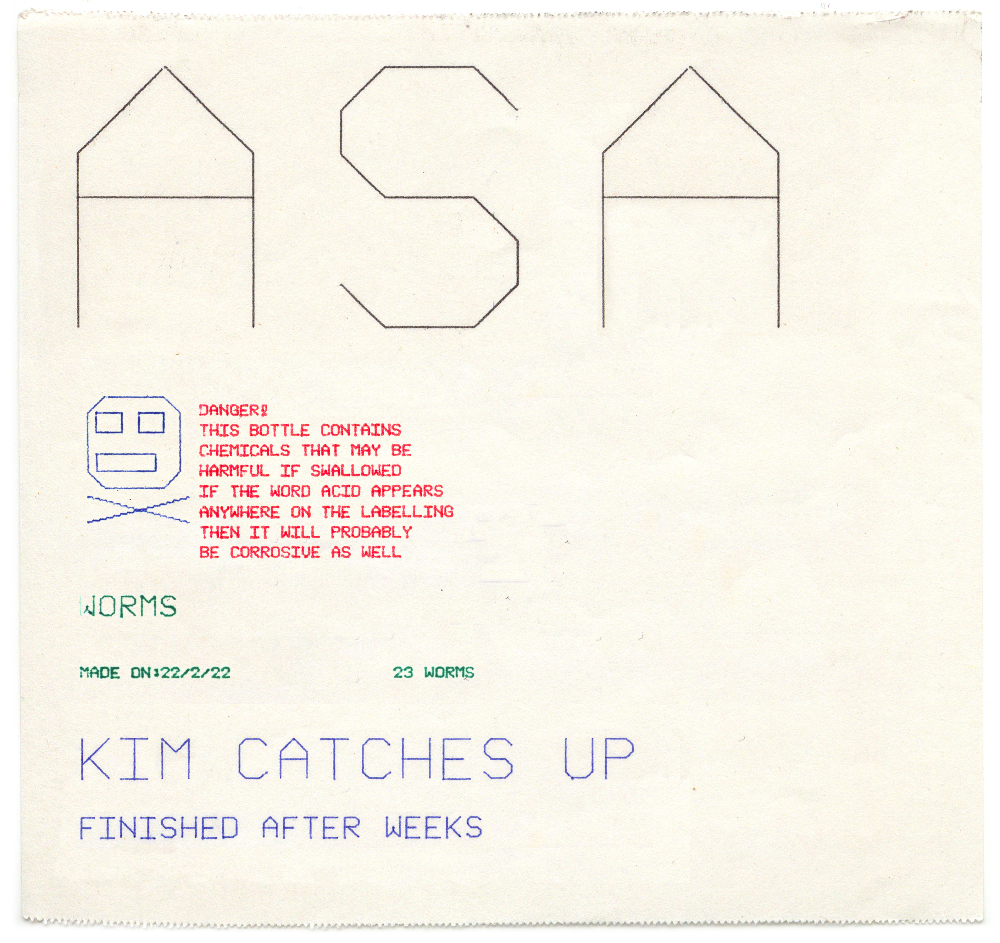

Commodore 1520 / Atari 1020
A miniature four-color mechanical drawing machine that made physical output a spectacle

Overview
The Commodore 1520 — also sold as the Atari 1020, Tandy CGP-115, and several other rebadged variants — was a miniature color pen plotter built around the Japanese ALPS DPG1302 mechanism. Using 4.5-inch roll paper, a four-pen rotating turret, and stepper motors driving both paper feed and pen carriage, it produced multicolor vector graphics at ~0.2 mm resolution with a distinctive hand-drawn aesthetic. Priced at $199–$299 in 1983, it was the cheapest color output device available for any home computer. But the real draw was the spectacle: the paper whipping back and forth, the turret audibly clicking between colors, the solenoid hammering the pen down with a sharp "thwack" — computer output as a watchable, listenable mechanical performance.
Deep dive
The DPG1302 mechanism was designed by ALPS Electric of Japan, known for floppy drives, printer mechanisms, and electronic components. Rather than selling directly to consumers, ALPS licensed the mechanism to multiple computer manufacturers, each adding their own interface electronics and branding. Commodore's version ($199.95) used the IEC serial bus, Atari's ($299) used SIO, and Tandy's ($249.95) used the Color Computer serial port. This multi-vendor strategy made the DPG1302 the most widely distributed pen plotter in home computing history.
Three stepper motors operated simultaneously: paper feed via rubber-coated friction drum (Y-axis), pen carriage along a round rail (X-axis, 480 discrete positions), and a motor indexing the four-pen turret between colors. A solenoid produced a sharp "thwack" for pen lift/drop. The plotter offered 15 line styles through programmed pen-lift patterns. COMPUTE! magazine in 1983 described text printing as requiring "the patience of a monk — tediously but precisely, the plotter scrolls the paper back and forth under the pen to carefully scribe each letter."
Users threaded roll paper, inserted four miniature ballpoint pens (black, red, blue, green standard; eight additional colors available), and sent plot commands. Text modes offered 20, 40, or 80 columns, rotatable in 90° increments. The graphics coordinate system provided 480 horizontal steps with Y coordinates from -999 to 999. Each pen had a finite ink supply and could dry out — pen caps were essential. Complex drawings could take 10–20 minutes, turning output into a watchable ceremony.
At least eight brandings appeared: Commodore 1520/VC-1520, Atari 1020 (the best photographically documented), Tandy CGP-115, TI HX-1000 (portable, 2.25-inch paper, AA batteries, $199.95), Oric MCP40, Sharp CE-150, and Mattel Aquarius 4615. By 1986, the Atari 1020 was being cleared for under $50.
The DPG1302 represents a brief moment when mechanical drawing was viable consumer technology. Inkjet printers soon rendered pen plotters obsolete for home use, though large-format plotters persisted in CAD. For HCI, the plotter is a case study in physical output as performance: its slowness and audibility transformed computer output into a mechanical ceremony.
Team & pioneers
- ALPS Electric Co., Ltd. Japanese manufacturer of the DPG1302 mechanism. Also known for floppy disk drives, printer mechanisms, and electronic switches.
- Commodore International Rebadged as Commodore 1520 for VIC-20 and C64 via IEC serial bus. Announced at Winter CES 1983.
- Atari Inc. Rebadged as Atari 1020 for 8-bit computers via SIO port. Best photographically documented variant (14 CC images on Commons).
Media



Sources
- Wikipedia: Atari 1020
- COMPUTE! Magazine Issue 36, May 1983: "The New Low-Cost Printer/Plotters"
- ANTIC Magazine Vol. 4 No. 10, February 1986: "Mastering the Atari 1020 Plotter"
- Hexbus.com: TI HX-1000 Printer/Plotter (ALPS DPG1302 variants list)
- Wikimedia Commons: Category:Atari 1020 (14 CC-licensed images)
- Wikimedia Commons: Category:Commodore 1520 (3 public domain images)